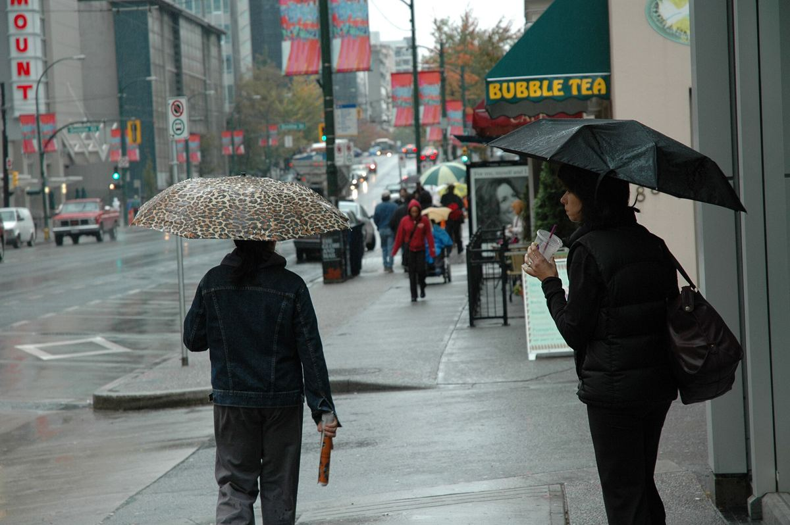
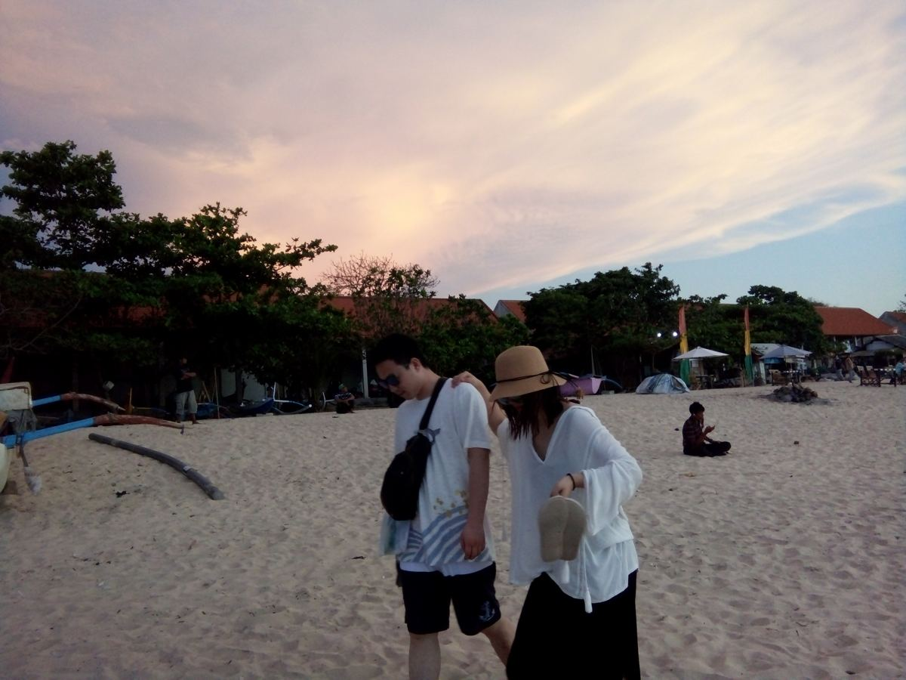
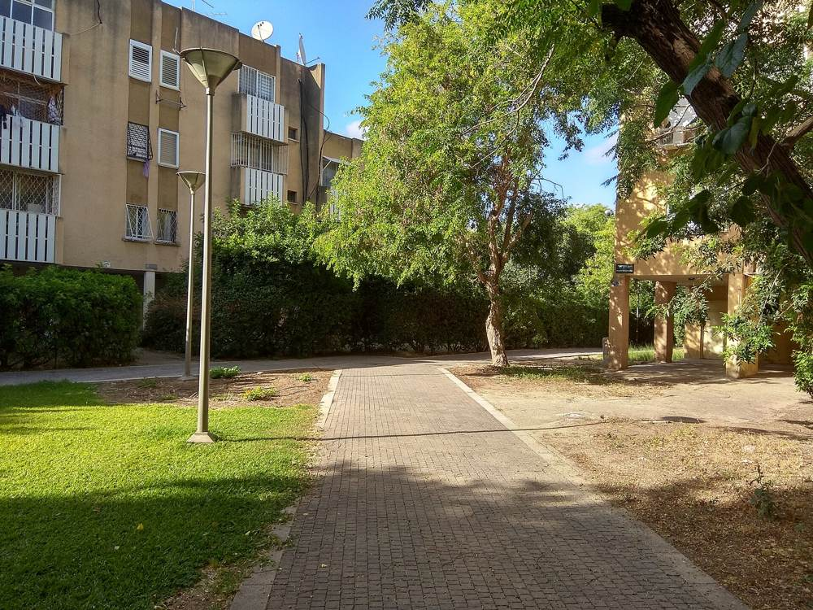

תמונה להמחשהIllustrative photo
ביטוחInsurance
פוליסות פרטיות, וגם פוליסות לעובדים של חברה.Personal policies, and policies for a company’s staff.
קונספט לדוגמה שנבנה עבור יואב גולן סוכן ביטוח · זה אינו האתר הרשמי של העסקA sample concept built for Yoav Golan Insurance Agent · This is not the business’s official website
סוכן ביטוח בדרך עכו 140, קריית ביאליק. הפוליסות, החיסכון והשאלות, אצל אדם אחד.An insurance agent at 140 Akko Road, Kiryat Bialik. Your policies, your savings and your questions, with one person.



כמו שכתוב מתחת ללוגו שלו.Just as it says under his logo.
פוליסות פרטיות, וגם פוליסות לעובדים של חברה.Personal policies, and policies for a company’s staff.
החיסכון לטווח ארוך, מוסבר במילים פשוטות.Long-term savings, explained in plain words.
התמונה הכספית של הבית, מסודרת ומוסברת.Your household’s financial picture, in order and explained.
סוכן הביטוח מדרך עכו 140, קריית ביאליק. ככה הלקוחות שלו מתארים אותו:The insurance agent at 140 Akko Road, Kiryat Bialik. This is how his clients describe him:
״יואב הרבה יותר מסוכן ביטוח! הוא חבר, איכפתי, איכותי״
“Yoav is much more than an insurance agent! He’s a friend, caring, a quality person”
בוחרים על המעגל, ההודעה נכתבת לבד.Pick on the circle; the message writes itself.
37 ביקורות. הנה כמה מהן, במילים של הכותבים.37 reviews. A few of them, in their writers’ words.
״טיפל בפוליסות מורכבות, סידר בעיות עבר בהמון אכפתיות סבלנות לב גדול ומקצועיות שאין לה עוררין!״
“He handled complex policies and sorted out past problems with so much care, patience, a big heart and unquestionable professionalism!”
״יואב גולן סוכן הביטוח שלנו פשוט אלוף. תמיד זמין, קשוב, סבלני ומקצועי ברמות.״
“Yoav Golan, our insurance agent, is simply a champion. Always available, attentive, patient and highly professional.”
״שירות ברמה גבוהה, ליווי צמוד ואישי, מקצועיות ללא פשרות. הייתה לי חוויה טובה, קלה ומעולה בזכות הליווי והשירות של יואב.״
“High-level service, close and personal guidance, uncompromising professionalism. I had a good, easy, excellent experience thanks to Yoav’s guidance and service.”
״יואב גולן סוכן הביטוח שלנו כבר כמה שנים. יואב הרבה יותר מסוכן ביטוח! הוא חבר, איכפתי, איכותי ותמיד נותן מענה מהיר ויעיל. ממליצה בחום מכול הלב״
“Yoav Golan has been our insurance agent for a few years. Yoav is much more than an insurance agent! He’s a friend, caring, a quality person, and always answers quickly and efficiently. I recommend him warmly, with all my heart”
״שירות מעולה, תמיד זמין מענה מהיר תודה רבה על העזרה״
“Excellent service, always available, quick answers, thank you so much for the help”
ביטוח, פנסיה ופיננסים, כמו שכתוב בלוגו שלו.Insurance, pension and finance, as his logo says.
דרך עכו 140, קריית ביאליק. המפה למטה.140 Akko Road, Kiryat Bialik. The map is below.
ראשון עד חמישי, 9:00–17:00. שישי ושבת סגור.Sunday to Thursday, 9:00–17:00. Closed Friday and Saturday.
כן, למספר 054-839-7829, או דרך המעגל למעלה.Yes, to 054-839-7829, or through the circle above.